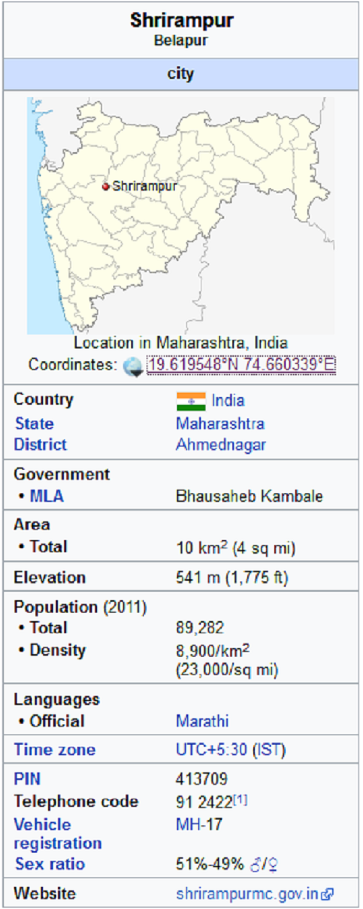

Right click on image to view full screen
History
From Wikipedia, the free encyclopedia
This article is about the city.

Shrirampur is a city and a municipal council in Ahmednagar district in the Indian state of Maharashtra situated at 19.62 N, 74.66 E in western Maharashtra.Shrirampur is second biggest city in Ahmednagar District. Shrirampur is considered as one of the major producers of sugarcane in the sugarcane belt in the state of Maharashtra.
history
Shrirampur is quite new as compared to other cities. As the Central Railway (India) Daund-Manmad Line was being laid, a railway station for the village of Belapur (बेलापुर) was built nearly 6 km (3.7 mi) from the place where the station was originally planned. During this period, people (such as Gangaram Dawkhar, the first resident of Shrirampur) started living around the railway station. This area was considered as one of the major producers of sugarcane in the sugarcane belt in the state of Maharashtra. Over 10 to 15 sugarcane industries surrounded the town. People from throughout Maharashtra settled in Shrirampur. After partition, Shrirampur received many migrants from Pakistan, who opted to settle in India. As a result, non-Maharashtrian communities helped to transform this city into a major business center. The rapid growth from the 1960s to the 1980s has slowed.
about
Shrirampur हे राहता तालुक्याच्या विभाजना अगोदर सर्वात जास्त साखर कारखाने असलेले भारतातील शहर होते. ऊस व कांदा हे येथील प्रमुख पिके आहेत. Shrirampur तालुक्यात सध्या ५२ गावांचा समावेश आहे. अहमदनगर जिल्ह्याचे विभाजन झाल्यास Shrirampur हे जिल्ह्याचे मुख्यालय असेल. श्रीरामपूरला जिल्हा होण्यास लागणाऱ्या सर्व प्रशासकीय इमारती उपलब्ध असून श्रीरामपूरला स्वतंत्र आर टी ओ कार्यालय, जिल्हास्तरीय वरिष्ठ न्यायालय व अप्पर जिल्हा पोलीस कार्यालय आहेत. जिल्ह्याच्या दृष्टीने हवी असणारी उत्तम वाहतूक व्यवस्था व रेल्वेची उपलब्धता आहे. नवीन कार्यालयांसाठी असणारी विपुल प्रमाणात सरकारी जागा आहे.Shrirampur मध्ये खंडाळा येथे नवसाचा गणपती आहे.रम्य निसर्ग आणि मोरांसाठी प्रसिध्द आहे. Shrirampur मध्ये दत्तनगर येथे एम आय डी सी आहेत. Shrirampur चे भोगोलिक स्थान उत्तर जिल्ह्यातील सर्व तालुक्यांना सोयीस्कर असे आहे.त्यामुळे नागरिकांचा वेळेचा अपव्यय होणार नाही. Shrirampur चेक टाउन प्लॅनिंग उत्तम असून बस स्टॅन्ड आणि रेलवे स्टेशन २ मिनिटाच्या अंतरा वर आहे. उत्तम नागरीव्यवस्था, स्वच्छता आणि मुबलक पाणीपूरवठ्यामुळे स्थानिकांचे जीवनमान चांगले आहे.अद्ययावत सोयींनी परीपूर्णसरकारी व खाजगी दवाखाने आहेत.Shrirampur चे हवामान हे उत्तम आहे व शेती साठी प्रवरा नदी व त्या वरील पाण्याचे योग्य नियोजन आहे. शेत जमीन सुपीक असल्यामुळे शेतकरी सुखी समाधानी आहे.Shrirampur मध्ये नगरपरिषद आहे.
Railway
CBD Belapur(Shrirampur) is a railway station on the Harbour Line of the Mumbai Suburban Railway network. It serves the Central Business District of Navi Mumbai. Around 50,000 people travel towards CST and 15,000 travel towards Panvel every day.
Notable residents
Govindrao Adik
Ramrao Adik
Zaheer Khan, Indian cricketer
C. Ramchandra Music composer
Annasaheb Shinde Agriculture minister
Karamshi Jethabhai Somaiya